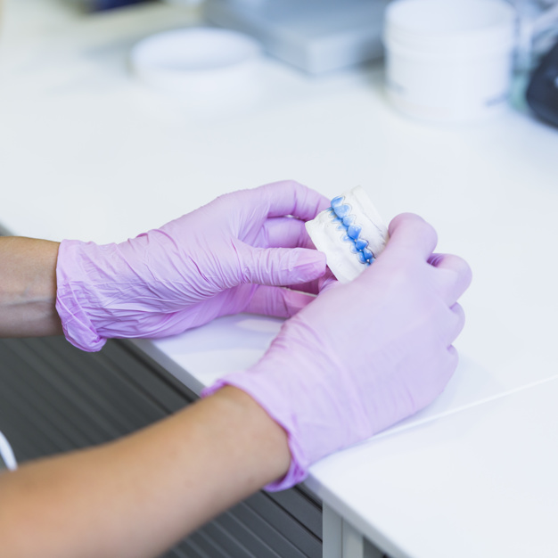

<!--
  Generated template for the LabBioloPeriodontPage page.

  See http://ionicframework.com/docs/components/#navigation for more info on
  Ionic pages and navigation.
-->
<ion-header>

  <ion-navbar color="paua">
    <ion-title>Laboratorio Patología Bucal</ion-title>
  </ion-navbar>

</ion-header>


<ion-content padding class="fondo">
  <ion-card>
    
    <ion-card-content>
      
      <ion-card-title class="card-title">1. Laboratorio de biología periodontal y tejidos mineralizados.</ion-card-title>
      <div class="card-item">
      <p class="card-subtitle">
        Palabras claves: Principios histológicos generales y tejidos primarios.
      </p>
    </div>
    </ion-card-content>
      <ion-card-content>
      <div class="content-button">
        <button ion-button outline round color="green" color="green" (click)="aExamenInterpretacion()">Ver</button>
      </div>
    </ion-card-content>
  </ion-card>

</ion-content>